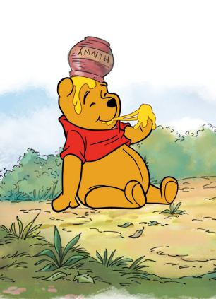
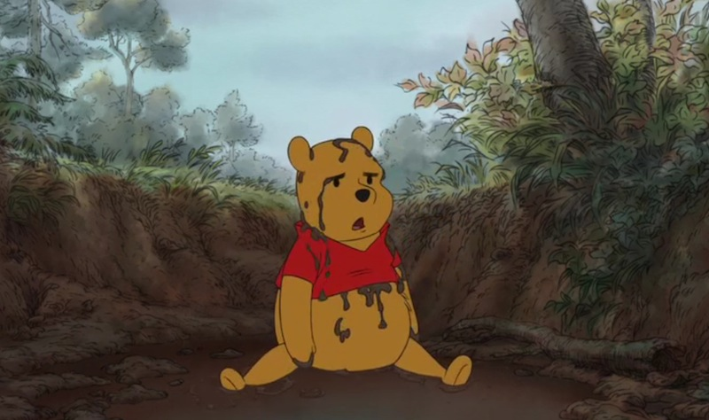
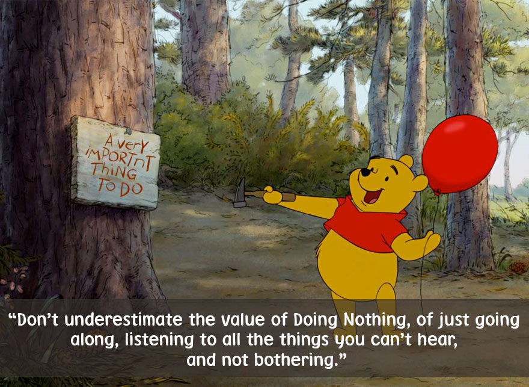

He is a small golden bear, stands at nearly 22 inches tall and wears an old red color t-shirt. This bear is undoubtedly the world's most loved and revered bear. He has little brains, does a lot of silly things, and his love for honey (hunny) is endless, yes the bear is none other than everyone's favourite bear - Winnie the Pooh. The 1st chapter of the Winnie-the-Pooh book was published on December 24, 1925 while the entire book written by A. A. Milne was released on October 14, 1926. All over the world his birthday is celebrated with much fanfare on 14th October. Winnie the Pooh is also called Pooh Bear or just Pooh. He is best friends with everyone in the 100 Acre Wood. The first thing he says when he gets up in the morning is "what's for breakfast". Pooh invented the game Poohsticks. Things he likes to do is to exercise in the morning, go on an adventure with Christopher Robin or Piglet, visiting friends who he thinks have Hunny and looking for "Hunny to Fill the Rumblee in his Tumblee".
  